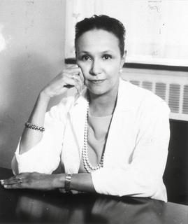
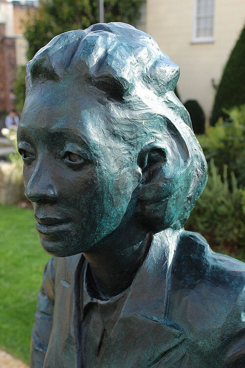
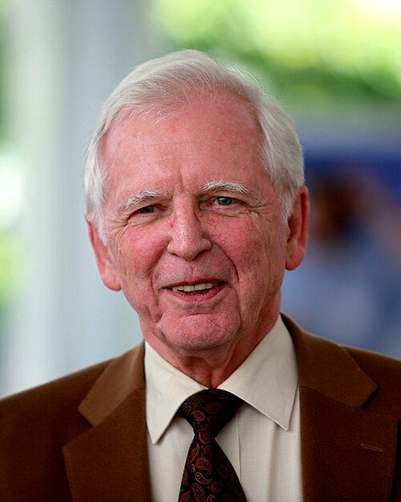

The people behind oncology
Doctors, scientists and patients who changed the history of cancer, from Percivall Pott to immunotherapy.
 011714-1788
011714-1788Percivall Pott
The London surgeon who in 1775 described chimney sweeps' cancer and showed, for the first time, that a cancer could have an avoidable environmental cause.
Read → 021821-1902
021821-1902Rudolf Virchow
The German physician who showed that cancer is made of cells that come from other cells and founded cellular pathology, the basis of modern diagnosis.
Read → 031845-1923
031845-1923Wilhelm Röntgen
The German physicist who discovered X-rays in 1895. Within months they were used to see inside the body and, soon afterwards, to treat tumours.
Read → 041852-1922
041852-1922William Halsted
The American surgeon who created the radical mastectomy and the modern school of surgery. His operation dominated breast cancer treatment for 80 years.
Read → 051862-1936
051862-1936William Coley
The New York surgeon who treated sarcomas with injected bacteria at the end of the 19th century. Today he is regarded as the grandfather of immunotherapy.
Read →061862-1915Theodor Boveri
The German biologist who proposed in 1914 that cancer arises from cells with abnormal chromosomes. An idea half a century ahead of its time.
Read → 071867-1934
071867-1934Marie Curie
The Polish physicist and chemist who discovered polonium and radium, won two Nobel Prizes and drove the use of radioactivity to treat cancer.
Read →081879-1970Peyton Rous
The American pathologist who showed in 1911 that a virus could cause cancer in chickens. He received the Nobel Prize 55 years later.
Read → 091883-1962
091883-1962George Papanicolaou
The Greek doctor who invented the smear test that bears his name, the first mass cancer screening test, which has prevented millions of deaths from cervical cancer.
Read → 101900-1994
101900-1994Mary Lasker
The American activist who made cancer research a political priority and was key to the National Cancer Act of 1971.
Read → 111901-1997
111901-1997Charles Huggins
The Canadian urologist who showed in 1941 that prostate cancer depends on male hormones. He opened the door to hormone therapy.
Read → 121903-1973
121903-1973Sidney Farber
The Boston pathologist who in 1948 achieved the first drug-induced remissions of childhood leukaemia and is considered the father of modern chemotherapy.
Read →131912-2005Richard Doll
The British epidemiologist who, with Austin Bradford Hill, showed that smoking causes lung cancer. His British doctors study lasted 50 years.
Read → 141918-1999
141918-1999Gertrude Elion
The American chemist who designed drugs rationally, including 6-mercaptopurine for childhood leukaemia. A Nobel laureate without a doctorate.
Read → 151918-2005
151918-2005Cicely Saunders
The British nurse, social worker and doctor who founded the modern palliative care movement and the concept of "total pain".
Read → 161918-2019
161918-2019Bernard Fisher
The surgeon whose rigorous clinical trials showed that breast cancer did not need mutilating surgery to be cured, and changed how the disease is understood.
Read →
171919-2013Jane Cooke Wright
The African American oncologist who turned chemotherapy into a science, testing drugs on cultures of each patient's tumour. A co-founder of ASCO.
Read →
181920-1951Henrietta Lacks
The African American patient whose cervical cancer cells, HeLa cells, were the first human cells to live indefinitely in the laboratory. They were taken without her consent.
Read → 191925-2013
191925-2013Janet Rowley
The American geneticist who discovered in 1973 that the Philadelphia chromosome arises from an exchange between two chromosomes. She showed that cancer is a genetic disease.
Read →201933-2008Judah Folkman
The surgeon who in 1971 proposed that tumours must grow blood vessels in order to grow, an idea that opened the way to anti-angiogenic drugs.
Read →
211936-2023Harald zur Hausen
The German virologist who showed that human papillomavirus causes cervical cancer. His discovery made a vaccine against cancer possible.
Read → 22Varmus (1939); Bishop (1936)
22Varmus (1939); Bishop (1936)Harold Varmus and Michael Bishop
The American scientists who discovered in 1976 that oncogenes are normal genes of our own cells that have been altered.
Read → 231940
231940Steven Rosenberg
The US National Cancer Institute surgeon who showed that the immune system can eliminate advanced tumours. A pioneer of cell therapy.
Read →241946Mary-Claire King
The American geneticist who showed in 1990 that there is an inherited breast cancer gene on chromosome 17: BRCA1.
Read → 25Allison, b. 1948 · Honjo, b. 1942
25Allison, b. 1948 · Honjo, b. 1942James Allison and Tasuku Honjo
The two immunologists who discovered how to release the immune system's brakes to attack cancer, and won the 2018 Nobel Prize in Medicine.
Read →261948Dennis Slamon
The American oncologist who linked the HER2 gene to aggressive breast cancer and brought trastuzumab, one of the first targeted treatments, to the clinic.
Read → 27Born 1949
27Born 1949Mariano Barbacid
The Madrid biochemist whose team identified in 1982 the mutation that activates the first human oncogene, RAS, and who led Spain's National Cancer Research Centre.
Read → 281953
281953Carl June
The American immunologist who brought CAR-T cells, a patient's lymphocytes modified to attack their cancer, to the clinic. His first child patient, Emily Whitehead, remains in remission.
Read → 291953
291953Joan Massagué
The Barcelona-born scientist at Memorial Sloan Kettering who has discovered how cancer cells spread and survive in other organs: the biology of metastasis.
Read → 30Born 1955
30Born 1955Brian Druker
The oncologist who brought imatinib to patients with chronic myeloid leukaemia and turned a fatal disease into a chronic condition controlled with a tablet.
Read →